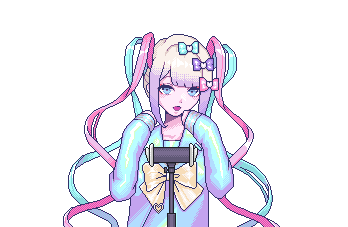
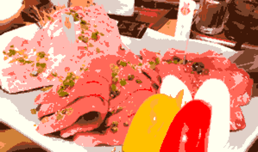
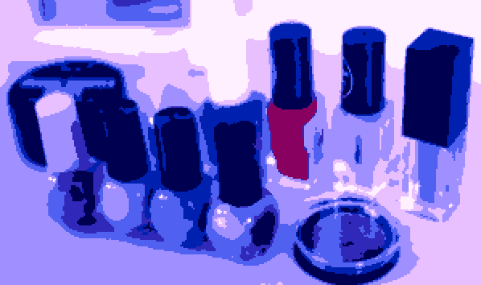
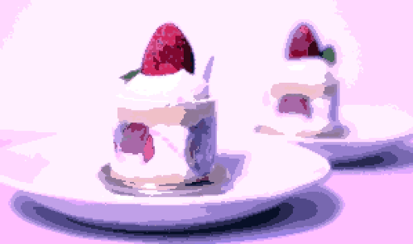
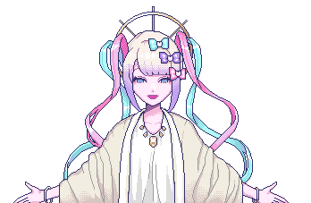
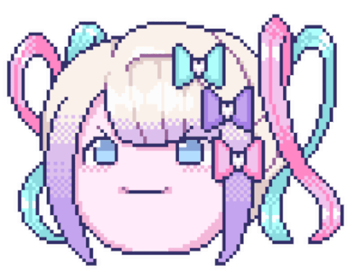
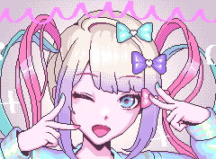
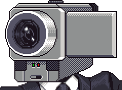

KAngel has come to save us
OMGkawaiiAngel-chan or KAngel, is the main character of NEEDY STREAMER OVERLOAD. This is a fictional business page for her fictional streaming career.
What we offer
The following is but a few options of the myriad of products & services we cater to, because it is an internet Angel's duty to bring joy and hope to the internet

Sleeping Aid ASMR Recordings

Japanese Cuisine

KAngel Brand Beauty Products

Sweets and Desserts

Spiritual Guidance

Our Team

OMGkawaiiAngel-chan / KAngel
C.E.O. - Streamer & Internet Angel

P-chan
Partner - Logistics
Ame
Partner- Research & Development